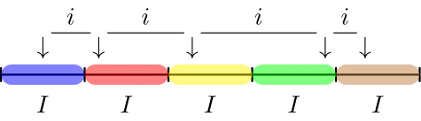

data(BuildIt)
n <- 105 Selection
Auditors must often evaluate balances or populations that include a large quantity of items. As it is not possible to individually examine all of these items, they must select a subset, or sample, from the total population to make a statement about a specific characteristic of the population. Several selection methodologies, which are widely accepted in the audit context, are available for this purpose. This chapter discusses the most frequently used sampling methodology for audit sampling and demonstrates how to select a sample using these methods in R.
5.1 Sampling Units
Selecting a subset from the population requires knowledge of the sampling units; physical representations of the population that needs to be audited. Generally, the auditor has to choose between two types of sampling units: individual items in the population or individual monetary units in the population. In order to perform statistical selection, the population must be divided into individual sampling units that can be assigned a probability to be included in the sample. The total collection of all sampling units which have been assigned a selection probability is called the sampling frame.
5.1.1 Items
A sampling unit for record (i.e., attributes) sampling is generally a characteristic of an item in the population. For example, suppose that you inspect a population of receipts. A possible sampling unit for record sampling can be the date of payment of the receipt. When a sampling unit (e.g., date of payment) is selected by the sampling method, the population item that corresponds to the sampled unit is included in the sample.
5.1.2 Monetary Units
A sampling unit for monetary unit sampling is different than a sampling unit for record sampling in that it is an individual monetary unit within an item or transaction, like an individual dollar. For example, a single sampling unit can be the 10\(^{th}\) dollar from a specific receipt in the population. When a sampling unit (e.g., individual dollar) is selected by the sampling method, the population item that includes the sampling unit is included in the sample.
5.2 Sampling Methods
This section discusses four sampling methods that are commonly used in audit sampling. The methods that will be discussed are:
- Random sampling
- Fixed interval sampling
- Cell sampling
- Modified sieve sampling
First, let’s get some notation out of the way. As discussed in Chapter 2, the population size \(N\) is defined as the total set of individual sampling units (denoted by \(x_i\)).
\[\begin{equation} N = \{x_1, x_2, \dots, x_N\}. \end{equation}\]
In statistical sampling, every sampling unit \(x_i\) in the population should receive a selection probability \(p(x_i)\). The purpose of the sampling method is to provide a framework to assign selection probabilities to each of the sampling units, and subsequently draw sampling units from the population until a set of size \(n\) has been created.
To illustrate how the resulting sample differs for various sampling methods, we will use the BuildIt data set included in the jfa package. These data can be loaded into R using the code below. For simplicity, we will use a sample size of \(n = 10\) for all examples.
5.2.1 Random Sampling
Random sampling is the most simple and straight-forward selection method. The random sampling method provides a method that allows every sampling unit in the population an equal chance of being selected, meaning that every combination of sampling units has the same probability of being selected as every other combination of the same number of sampling units. Simply put, the algorithm draws a random selection of size \(n\) of the sampling units. Therefore, the selection probability for each sampling unit is defined as:
\[\begin{equation} p(x) = \frac{1}{N}. \end{equation}\]
To make this procedure visually intuitive, Figure 5.1 below provides an illustration of the random sampling method.

- Advantage(s): The random sampling method yields an optimal random selection, with the additional advantage that the sample can be easily extended by applying the same method again.
- Disadvantages: Because the selection probabilities are equal for all sampling units there is no guarantee that items with a large monetary value in the population will be included in the sample.
5.2.1.1 Record Sampling
Random sampling can easily be coded in base R. First, we have to get a vector of of the possible items (rows) in the population that can be selected. When we are performing record sampling, we can simply use R’s build in sample() function to draw a random sample from a vector 1:nrow(BuildIt) representing the row indices of the items and store the result in a variable items.
You can then select the sample from the population using the selected indices stored in items.
BuildIt[items, ]
#> ID bookValue auditValue
#> 1017 50755 618.24 618.24
#> 679 20237 669.75 669.75
#> 2177 9517 454.02 454.02
#> 930 85674 257.82 257.82
#> 1533 31051 308.53 308.53
#> 471 84375 824.66 824.66
#> 2347 75616 623.70 623.70
#> 270 82033 352.75 352.75
#> 1211 12877 52.89 52.89
#> 3379 85322 330.24 330.24The sample can be reproduced in jfa via the selection() function. This function takes as input the population data, the sample size, and the characteristics of the sampling method. The argument units allows you to specify that you want to use record sampling (units = "items"), while the method argument enables you to specify that you are performing random sampling (method = 'random').
set.seed(1)
result <- selection(data = BuildIt, size = n, units = "items", method = "random")
result$sample
#> row times ID bookValue auditValue
#> 1 1017 1 50755 618.24 618.24
#> 2 679 1 20237 669.75 669.75
#> 3 2177 1 9517 454.02 454.02
#> 4 930 1 85674 257.82 257.82
#> 5 1533 1 31051 308.53 308.53
#> 6 471 1 84375 824.66 824.66
#> 7 2347 1 75616 623.70 623.70
#> 8 270 1 82033 352.75 352.75
#> 9 1211 1 12877 52.89 52.89
#> 10 3379 1 85322 330.24 330.24An alternative to specifying the desired sample size through the size argument is to provide an object generated by the planning() function to the selection() function. For instance, the following code utilizes the planning() function to plan a sample size based on a performance materiality of 3 percent and a sampling risk of 5 percent, which can be passed directly to selection() to select the sample from the BuildIt population.
plan <- planning(materiality = 0.03)
result <- selection(data = BuildIt, size = plan, units = "items", method = "random")The ability of one function to accept input from another function allows for the implementation of a workflow in which the planning() function and the selection() function are sequentially linked. Additionally, the use of R’s native pipe operator |> further simplifies this process.
result <- planning(materiality = 0.03) |>
selection(data = BuildIt, units = "items", method = "random")The selection() function has three additional arguments which you can use to preprocess your population before selection. These arguments are order, decreasing and randomize.
The order argument takes as input a column name in data which determines the order of the population. For example, you can order the population from lowest book value to highest book value before engaging in the selection. In this case, you should use the decreasing = FALSE (its default value) argument.
set.seed(1)
result <- selection(data = BuildIt, size = n, units = "items", method = "random", order = "bookValue")
result$sample
#> row times ID bookValue auditValue
#> 1 29 1 58849 274.26 274.26
#> 2 3297 1 24279 229.95 229.95
#> 3 931 1 28025 429.14 429.14
#> 4 756 1 11563 263.08 105.23
#> 5 3375 1 58981 335.39 335.39
#> 6 1624 1 97783 197.19 197.19
#> 7 2534 1 95715 457.42 457.42
#> 8 1798 1 95520 157.54 157.54
#> 9 3448 1 12959 296.82 296.82
#> 10 450 1 39908 831.31 831.31The randomize argument can be used to randomly shuffle the items in the population before selection. For example, you can randomly shuffle the population before engaging in the selection using randomize = TRUE.
set.seed(1)
result <- selection(data = BuildIt, size = n, units = "items", method = "random", randomize = TRUE)
result$sample
#> row times ID bookValue auditValue
#> 1 1264 1 85424 406.81 406.81
#> 2 923 1 12566 287.61 287.61
#> 3 776 1 92923 247.89 247.89
#> 4 127 1 71325 306.78 306.78
#> 5 1611 1 10019 191.18 191.18
#> 6 3087 1 87887 666.13 666.13
#> 7 1729 1 78779 608.02 608.02
#> 8 2037 1 74155 347.18 347.18
#> 9 2769 1 26010 240.10 240.10
#> 10 2276 1 80154 282.91 282.915.2.1.2 Monetary Unit Sampling
When we are performing record sampling, we have to consider that each item in the population consists of multiple smaller items (i.e., the monetary units), which means that items with a higher book value should get a higher probability of being selected. The sample() function faciliates weighted selection via the prob argument, which takes a vector of values and, using normalization, computes the weights for selection. The call below is similar to before, but in this case we use the book values in the column bookValues of the data set to weigh the items and store the result in a variable items.
You can then select the sample from the population using the selected indices stored in items.
BuildIt[items, ]
#> ID bookValue auditValue
#> 2174 90260 625.98 625.98
#> 2928 68595 548.21 548.21
#> 1627 98301 429.07 429.07
#> 700 29683 239.26 239.26
#> 147 72906 677.62 677.62
#> 3056 86317 246.22 246.22
#> 3118 14548 204.63 204.63
#> 2045 45416 381.05 381.05
#> 1311 91955 398.96 398.96
#> 716 12815 873.43 873.43The sample can be reproduced in jfa via the selection() function. The argument units allows you to specify that you want to use monetary unit sampling (units = "values"), while the method argument enables you to specify that you are performing random sampling (method = 'random'). Note that you should provide the name of the column in the data that contains the monetary units via the values argument.
set.seed(1)
result <- selection(data = BuildIt, size = n, units = "values", method = "random", values = "bookValue")
result$sample
#> row times ID bookValue auditValue
#> 1 2174 1 90260 625.98 625.98
#> 2 2928 1 68595 548.21 548.21
#> 3 1627 1 98301 429.07 429.07
#> 4 700 1 29683 239.26 239.26
#> 5 147 1 72906 677.62 677.62
#> 6 3056 1 86317 246.22 246.22
#> 7 3118 1 14548 204.63 204.63
#> 8 2045 1 45416 381.05 381.05
#> 9 1311 1 91955 398.96 398.96
#> 10 716 1 12815 873.43 873.435.2.2 Fixed Interval Sampling
Fixed interval sampling is a method designed for yielding representative samples from monetary populations. The algorithm determines a uniform interval on the (optionally ranked) sampling units. Next, a starting point is handpicked or randomly selected in the first interval and a sampling unit is selected throughout the population at each of the uniform intervals from the starting point. For example, if the interval has a width of 10 sampling units and sampling unit number 5 is chosen as the starting point, the sampling units 5, 15, 25, etc. are selected to be included in the sample.
The number of required intervals \(I\) can be determined by dividing the number of sampling units in the population by the required sample size:
\[\begin{equation} I = \frac{N}{n}, \end{equation}\]
in which \(n\) is the required sample size and \(N\) is the total number of sampling units in the population.
If the space between the selected sampling units is equal, the selection probability for each sampling unit is theoretically defined as:
\[\begin{equation} p(x) = \frac{1}{I}, \end{equation}\]
with the property that the space between selected units \(i\) (of which the first one is the starting point) is the same as the interval \(I\), see @#fig-selection-interval below. However, in practice the selection is deterministic and completely depends on the chosen starting points (using start).

The fixed interval method yields a sample that allows every sampling unit in the population an equal chance of being selected. However, the fixed interval method has the property that all items in the population with a monetary value larger than the interval \(I\) have an selection probability of one because one of these items’ sampling units are always selected from the interval. Note that, if the population is arranged randomly with respect to its deviation pattern, fixed interval sampling is equivalent to random selection.
- Advantage(s): The advantage of the fixed interval sampling method is that it is often simple to understand and fast to perform. Another advantage is that, in monetary unit sampling, all items that are greater than the calculated interval will be included in the sample. In record sampling, since units can be ranked on the basis of value, there is also a guarantee that some large items will be in the sample.
- Disadvantage(s): A pattern in the population can coincide with the selected interval, rendering the sample less representative. What is sometimes seen as an added complication for this method is that the sample is hard to extend after drawing the initial sample. This is due to the chance of selecting the same sampling unit. However, by removing the already selected sampling units from the population and redrawing the intervals this problem can be efficiently solved.
5.2.2.1 Record Sampling
To code fixed interval sampling in a record sampling context, we first have to compute the size of the interval we are working with. This is computed by dividing the number of items in the population by the desired sample size \(n\). Suppose the auditor wants to select a sample of 10 items, then the interval is computed by:
interval <- nrow(BuildIt) / nNext, we have to determine the starting point. We are going to take the fifth unit in each interval in this case.
start <- 5To find which rows are part of the sample, we execute the following code:
items <- floor(start + interval * 0:(n - 1))You can then select the sample from the population using the selected indices stored in items.
BuildIt[items, ]
#> ID bookValue auditValue
#> 5 55080 620.88 620.88
#> 355 27934 749.38 749.38
#> 705 21900 919.00 919.00
#> 1055 66675 384.27 384.27
#> 1405 13472 360.05 360.05
#> 1755 61607 389.75 389.75
#> 2105 68519 354.71 354.71
#> 2455 91983 467.72 467.72
#> 2805 25646 420.80 420.80
#> 3155 94955 248.77 248.77The sample can be reproduced in jfa via the selection() function. The argument units allows you to specify that you want to use record sampling (units = "items"), while the method argument enables you to specify that you are performing fixed interval sampling (method = 'interval'). Note that, by default, the first sampling unit from each interval is selected. However, this can be changed by setting the argument start to a different value.
result <- selection(data = BuildIt, size = n, units = "items", method = "interval", start = start)
result$sample
#> row times ID bookValue auditValue
#> 1 5 1 55080 620.88 620.88
#> 2 355 1 27934 749.38 749.38
#> 3 705 1 21900 919.00 919.00
#> 4 1055 1 66675 384.27 384.27
#> 5 1405 1 13472 360.05 360.05
#> 6 1755 1 61607 389.75 389.75
#> 7 2105 1 68519 354.71 354.71
#> 8 2455 1 91983 467.72 467.72
#> 9 2805 1 25646 420.80 420.80
#> 10 3155 1 94955 248.77 248.775.2.2.2 Monetary Unit Sampling
In monetary unit sampling, the only difference is that we are computing the interval on the basis of the booked values in the column bookValue of the data set. In this case, the starting point start = 5 determines which monetary unit from each interval is selected.
interval <- sum(BuildIt$bookValue) / nTo find which units are part of the sample, we execute the following code:
units <- floor(start + interval * 0:(n - 1))To obtain which items are part of the sample, we can run the following for loop. Note that this does not take into account whether the book values contain negative values, which should not be included in the cumulative sum below.
You can then select the sample from the population using the selected indices stored in items.
BuildIt[items, ]
#> ID bookValue auditValue
#> 1 82884 242.61 242.61
#> 358 20711 610.88 610.88
#> 715 99012 313.75 313.75
#> 1081 65319 502.54 201.02
#> 1421 88454 856.28 856.28
#> 1774 87258 157.68 157.68
#> 2103 48652 497.21 497.21
#> 2435 37248 1041.44 1041.44
#> 2787 10925 377.10 377.10
#> 3152 71832 1001.82 1001.82The sample can be reproduced in jfa via the selection() function. The argument units allows you to specify that you want to use monetary unit sampling (units = "values"), while the method argument enables you to specify that you are performing fixed interval sampling (method = 'interval'). Note that you should provide the name of the column in the data that contains the monetary units via the values argument.
result <- selection(data = BuildIt, size = n, units = "values", method = "interval", values = "bookValue", start = start)
result$sample
#> row times ID bookValue auditValue
#> 1 1 1 82884 242.61 242.61
#> 2 358 1 20711 610.88 610.88
#> 3 715 1 99012 313.75 313.75
#> 4 1081 1 65319 502.54 201.02
#> 5 1421 1 88454 856.28 856.28
#> 6 1774 1 87258 157.68 157.68
#> 7 2103 1 48652 497.21 497.21
#> 8 2435 1 37248 1041.44 1041.44
#> 9 2787 1 10925 377.10 377.10
#> 10 3152 1 71832 1001.82 1001.825.2.3 Cell Sampling
The cell sampling method divides the (optionally ranked) population into a set of intervals \(I\) that are computed through the previously given equations. Within each interval, a sampling unit is selected by randomly drawing a number between 1 and the interval range \(I\). This causes the space \(i\) between the sampling units to vary. The procedure is displayed in @#fig-selection-cell.
Like in the fixed interval sampling method, the selection probability for each sampling unit is defined as:
\[\begin{equation} p(x) = \frac{1}{I}. \end{equation}\]

The cell sampling method has the property that all items in the population with a monetary value larger than twice the interval \(I\) have a selection probability of one.
- Advantage(s): More sets of samples are possible than in fixed interval sampling, as there is no systematic interval \(i\) to determine the selections. It is argued that the cell sampling algorithm offers a solution to the pattern problem in fixed interval sampling.
- Disadvantage(s): A disadvantage of this sampling method is that not all items in the population with a monetary value larger than the interval have a selection probability of one. Besides, population items can be in two adjacent cells, thereby creating the possibility that an items is included in the sample twice.
5.2.3.1 Record Sampling
To code cell sampling in a record sampling context, we again have to compute the size of the interval we are working with:
interval <- nrow(BuildIt) / nNext, we have to randomly determine which items are going to be selected in each interval.
To find which rows are part of the sample, we execute the following code:
items <- floor(starts + interval * 0:(n - 1))You can then select the sample from the population using the selected indices stored in items.
BuildIt[items, ]
#> ID bookValue auditValue
#> 92 75133 355.16 355.16
#> 480 81037 456.27 456.27
#> 900 1730 449.87 449.87
#> 1367 36587 282.32 282.32
#> 1470 10305 648.70 648.70
#> 2064 96344 268.94 268.94
#> 2430 60885 493.77 493.77
#> 2681 60935 312.98 312.98
#> 3020 8716 450.76 450.76
#> 3171 61036 387.67 387.67The sample can be reproduced in jfa via the selection() function. The argument units allows you to specify that you want to use record sampling (units = "items"), while the method argument enables you to specify that you are performing cell sampling (method = 'cell').
set.seed(1)
result <- selection(data = BuildIt, size = n, units = "items", method = "cell")
result$sample
#> row times ID bookValue auditValue
#> 1 92 1 75133 355.16 355.16
#> 2 480 1 81037 456.27 456.27
#> 3 900 1 1730 449.87 449.87
#> 4 1367 1 36587 282.32 282.32
#> 5 1470 1 10305 648.70 648.70
#> 6 2064 1 96344 268.94 268.94
#> 7 2430 1 60885 493.77 493.77
#> 8 2681 1 60935 312.98 312.98
#> 9 3020 1 8716 450.76 450.76
#> 10 3171 1 61036 387.67 387.675.2.3.2 Monetary Unit Sampling
In monetary unit sampling, the only difference is that we are computing the interval on the basis of the booked values in the column bookValue of the data set. In this case, the starting points start determines which monetary unit from each interval is selected.
interval <- sum(BuildIt$bookValue) / nTo obtain which items are part of the sample, we can run the following for loop. Note that this does not take into account whether the book values contain negative values, which should not be included in the cumulative sum below.
set.seed(1)
all_units <- ifelse(BuildIt$bookValue < 0, 0, BuildIt$bookValue)
all_items <- 1:nrow(BuildIt)
intervals <- 0:n * interval
items <- numeric(n)
for (i in 1:n) {
unit <- stats::runif(1, intervals[i], intervals[i + 1])
item <- which(unit <= cumsum(all_units))[1]
items[i] <- all_items[item]
}You can then select the sample from the population using the selected indices stored in items.
BuildIt[items, ]
#> ID bookValue auditValue
#> 95 15009 415.60 415.60
#> 486 79093 635.85 635.85
#> 931 28025 429.14 429.14
#> 1387 56444 296.37 296.37
#> 1492 81443 543.80 543.80
#> 2074 14196 270.45 270.45
#> 2418 87743 347.99 347.99
#> 2660 23927 454.81 454.81
#> 3024 78925 251.44 251.44
#> 3172 18286 450.57 450.57The sample can be reproduced in jfa via the selection() function. The argument units allows you to specify that you want to use monetary unit sampling (units = "values"), while the method argument enables you to specify that you are performing cell sampling (method = 'cell'). Note that you should provide the name of the column in the data that contains the monetary units via the values argument.
set.seed(1)
result <- selection(data = BuildIt, size = n, units = "values", method = "cell", values = "bookValue")
result$sample
#> row times ID bookValue auditValue
#> 1 95 1 15009 415.60 415.60
#> 2 486 1 79093 635.85 635.85
#> 3 931 1 28025 429.14 429.14
#> 4 1387 1 56444 296.37 296.37
#> 5 1492 1 81443 543.80 543.80
#> 6 2074 1 14196 270.45 270.45
#> 7 2418 1 87743 347.99 347.99
#> 8 2660 1 23927 454.81 454.81
#> 9 3024 1 78925 251.44 251.44
#> 10 3172 1 18286 450.57 450.575.2.4 Modified Sieve Sampling
The fourth option for the sampling method is modified sieve sampling (Hoogduin, Hall, & Tsay, 2010). The algorithm starts by selecting a standard uniform random number \(R_i\) between 0 and 1 for each item in the population. Next, the sieve ratio:
\[\begin{equation} S_i = \frac{Y_i}{R_i} \end{equation}\]
is computed for each item by dividing the book value of that item by the random number. Lastly, the items in the population are sorted by their sieve ratio \(S\) (in decreasing order) and the top \(n\) items are selected for inspection. In contrast to the classical sieve sampling method (Rietveld, 1978), the modified sieve sampling method provides precise control over sample sizes.
5.2.4.1 Monetary Unit Sampling
You can then select the sample from the population using the selected indices stored in items.
BuildIt[items, ]
#> ID bookValue auditValue
#> 2329 29919 681.10 681.10
#> 2883 59402 279.29 279.29
#> 1949 56012 581.22 581.22
#> 3065 47482 621.73 621.73
#> 1072 79901 789.97 789.97
#> 488 50811 651.35 651.35
#> 1916 53565 266.37 266.37
#> 463 65768 480.89 480.89
#> 1311 91955 398.96 398.96
#> 2895 8688 492.02 492.02The sample can be reproduced in jfa via the selection() function. The argument units allows you to specify that you want to use monetary unit sampling (units = "values"), while the method argument enables you to specify that you are performing modified sieve sampling (method = 'sieve'). Note that you should provide the name of the column in the data that contains the monetary units via the values argument.
set.seed(1)
result <- selection(data = BuildIt, size = n, units = "values", method = "sieve", values = "bookValue")
result$sample
#> row times ID bookValue auditValue
#> 1 2329 1 29919 681.10 681.10
#> 2 2883 1 59402 279.29 279.29
#> 3 1949 1 56012 581.22 581.22
#> 4 3065 1 47482 621.73 621.73
#> 5 1072 1 79901 789.97 789.97
#> 6 488 1 50811 651.35 651.35
#> 7 1916 1 53565 266.37 266.37
#> 8 463 1 65768 480.89 480.89
#> 9 1311 1 91955 398.96 398.96
#> 10 2895 1 8688 492.02 492.025.3 Practical Exercises
- Select a random sample of 120 items from the
BuildItdata set.
Click to reveal answer
Selecting a random sample of items can be done using the selection() function with the additional arguments size = 120, method = "random" and units = "items".
selec <- selection(data = BuildIt, size = 120, method = "random", units = "items")
head(selec$sample, 5)
#> row times ID bookValue auditValue
#> 1 2453 1 95755 295.58 295.58
#> 2 2914 1 86541 470.99 470.99
#> 3 301 1 61726 588.81 588.81
#> 4 2632 1 3335 237.32 237.32
#> 5 1579 1 62317 309.74 309.74- Select a sample of 240 monetary units from the
BuildItdata set using a fixed interval selection method. Use a starting point of 12.
Click to reveal answer
Selecting a random sample of items can be done using the selection() function with the arguments size = 240, method = "interval" and units = "values". Additionally, for fixed interval monetary unit sampling, the book values must be given in via argument values = "bookValue". The starting point is indicated using start = 12.
selec <- selection(data = BuildIt, size = 240, method = "interval", units = "values", values = "bookValue", start = 12)
head(selec$sample, 5)
#> row times ID bookValue auditValue
#> 1 1 1 82884 242.61 242.61
#> 2 15 1 76073 469.93 469.93
#> 3 31 1 83557 507.34 507.34
#> 4 47 1 53784 325.19 325.19
#> 5 63 1 51272 248.40 248.40